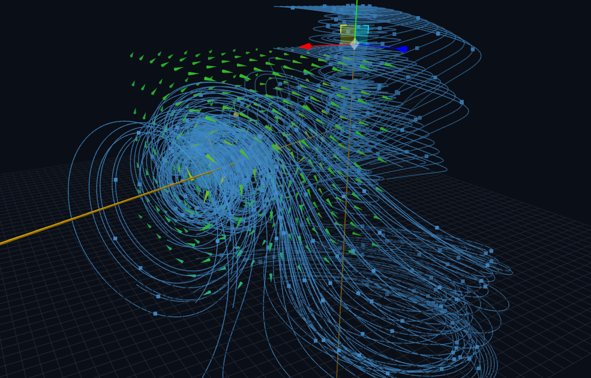

Field lines are a way to see a mathematical object. They are not physical threads in space; their direction indicates the local field direction, while their density is a visual convention for magnitude. The lab lets you place sources, move a probe, change the medium, and compare field geometry with integral statements of Maxwell’s equations.
Four equations, one electromagnetic picture
In differential form, the four Maxwell equations describe local field behavior. In integral form, they connect fields measured over a surface or loop to the sources and changing flux enclosed by it.
Here, ρ is charge density, J is current density, and ε and μ describe the medium. The lab uses a normalized unit system to keep the scene easy to manipulate; its numerical readouts are model values rather than calibrated SI measurements.

Flux: count what crosses a surface
Gauss’s law relates the electric flux through a closed surface to the charge enclosed by it. The Gaussian sphere in the lab is a visual integration surface: moving it changes which sources are enclosed and how the sampled field intersects the surface. For magnetism, the net flux through any closed surface is zero in this model, reflecting the absence of magnetic monopoles.

Induction: changing flux creates an EMF
Faraday’s law links the circulation of the electric field around a closed loop to the time rate of change of magnetic flux through that loop. In the lab, the pickup coil and AC-driven source make this relationship visible. The induced electromotive force is proportional to the negative change in magnetic flux, with the number of turns scaling the result.
The minus sign is Lenz’s law in action: the induced response opposes the change in flux that produces it. The live trace is most informative when the source is oscillating; pause the time evolution to distinguish a static snapshot from a time-dependent signal.
Energy flow and the probe
The Poynting vector points in the direction of electromagnetic energy transport in the model:
The probe also reports the electric and magnetic field magnitudes, a Lorentz-force estimate for a test charge, and the electromagnetic energy density. These quantities offer complementary views: field strength, force on a charge, and energy distribution are related, but they are not interchangeable.
What the simulation does—and does not—claim
- Quasi-static field construction: source fields are assembled from simplified analytic models and visualized in 3D.
- Normalized units: the interface uses naturalized constants, so values are best read comparatively unless a conversion to SI is explicitly defined.
- Numerical integration: flux and circulation are sampled at finite resolution. A nonzero residual can reflect discretization as well as model limitations.
- Not a full-wave solver: the lab is an exploratory field instrument, not a finite-difference time-domain solver or a complete solution of arbitrary Maxwell boundary-value problems.